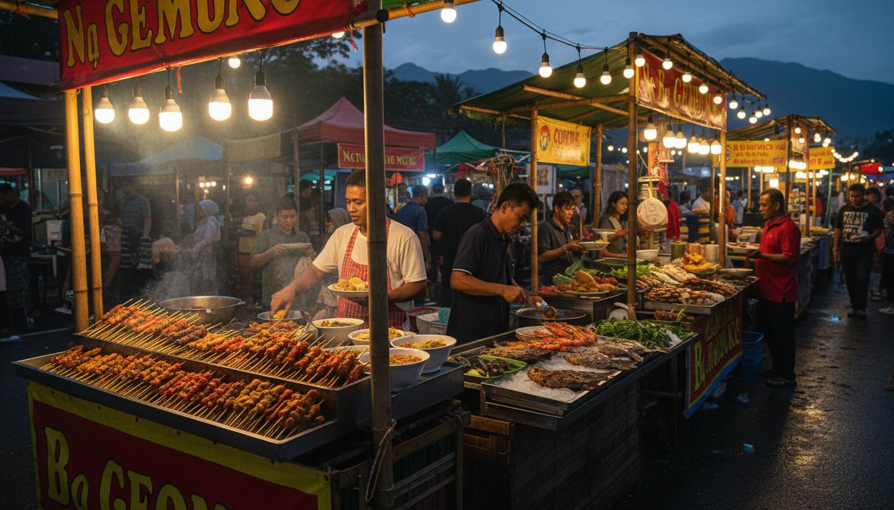

Kota Kinabalu City
Gateway to Sabah's Adventures
Kota Kinabalu (KK) is the vibrant capital city of Sabah and the main entry point for travelers exploring Malaysian Borneo. Nestled between the South China Sea and the towering Mount Kinabalu, this cosmopolitan city blends modern development with rich cultural heritage. With its stunning sunsets, bustling markets, diverse cuisine, and friendly locals, KK offers a perfect blend of urban excitement and natural beauty.

A City of Contrasts
Despite being a relatively young city (rebuilt after World War II), Kota Kinabalu has grown into a thriving metropolis of over 450,000 residents. The city's waterfront comes alive each evening as locals and tourists gather to watch spectacular sunsets paint the sky in shades of gold, orange, and purple over the Tunku Abdul Rahman Marine Park islands.
From modern shopping malls and international restaurants to traditional night markets and historic landmarks, KK caters to every type of traveler. The city's compact size makes it easy to explore, with most attractions within walking distance or a short taxi ride from the city center.
Top Attractions
- Jesselton Point: Waterfront promenade with stunning island views and ferry services
- Gaya Street Sunday Market: Vibrant weekend market selling everything from local crafts to pets
- Signal Hill Observatory: Panoramic city views from the highest point in KK
- Sabah State Mosque: Beautiful contemporary Islamic architecture with golden dome
- Atkinson Clock Tower: KK's oldest standing structure, built in 1905
- Mari Mari Cultural Village: Experience the traditions of Sabah's indigenous tribes
City Attractions Guide
| Attraction | Type | Location | Best Time |
|---|---|---|---|
| Tanjung Aru Beach | Beach / Sunset | West KK (15 min from center) | Late afternoon for sunset |
| Gaya Street Market | Shopping / Culture | Gaya Street, City Center | Sunday mornings (6 AM - 1 PM) |
| Filipino Market | Shopping / Food | Waterfront, City Center | Evening for seafood dinner |
| Likas Bay | Nature / Recreation | Northeast KK | Early morning for jogging |
| Kota Kinabalu City Mosque | Religious / Architecture | Likas Bay area | Non-prayer times |
| Monsopiad Cultural Village | Cultural / Heritage | Penampang (30 min) | Daytime for tours |
Tunku Abdul Rahman Marine Park

Island Paradise on Your Doorstep
Just a 15-20 minute boat ride from Kota Kinabalu's waterfront lies the Tunku Abdul Rahman Marine Park (TARP), a collection of five stunning islands surrounded by coral reefs and crystal-clear waters. The park is named after Malaysia's first Prime Minister and offers world-class snorkeling, diving, and beach activities.
The five islands - Gaya, Sapi, Manukan, Mamutik, and Sulug - each have their own unique character. Manukan is the most developed with facilities and accommodation, Sapi is perfect for snorkeling, and Mamutik offers a more secluded experience. Whether you're seeking water sports, jungle trekking, or simply relaxing on pristine beaches, TARP has it all.
Island Options
- Gaya Island: Largest island with luxury resorts and hiking trails
- Manukan Island: Most popular, with good facilities and snorkeling
- Sapi Island: Best for snorkeling and zip-lining to the sea
- Mamutik Island: Smallest and most peaceful, great for relaxation
- Sulug Island: Unspoiled natural beauty, perfect for solitude
Culture & Cuisine

Flavors of KK
Kota Kinabalu is a food lover's paradise. The city's diverse population has created a unique culinary scene blending Malay, Chinese, Indian, and indigenous Bornean influences. Head to the waterfront seafood restaurants for fresh catches prepared to order, or explore the night markets for affordable local favorites.
Don't miss the famous KK seafood - particularly the grilled fish, butter prawns, and chili crab. For breakfast, try the local laksa or hinava (Kadazan-Dusun raw fish salad). The Filipino Market near the waterfront is another must-visit for street food and local handicrafts.
Food Recommendations
- Welcome Seafood Restaurant: Famous for affordable, fresh seafood
- Kedai Kopi Fatt Kee: Local favorite for traditional breakfast
- Tanjung Aru Beach Food Stalls: Best sunset views with local snacks
- Night Market (Filipino Market): Street food and barbecue seafood
Shopping in KK
Kota Kinabalu offers diverse shopping experiences, from modern malls to traditional markets. Key shopping areas include:
- Imago Shopping Mall: Modern mall with international brands
- Suria Sabah: Waterfront shopping complex with cinema
- Gaya Street: Heritage shops and Sunday market
- Handicraft Market: Traditional crafts, pearls, and souvenirs
Discover Kota Kinabalu
Experience the vibrant atmosphere of KK city
Start Your Sabah Adventure from KK
Kota Kinabalu is the perfect base for exploring all of Sabah. Let us help you plan.
Plan Your Trip Travel Guide